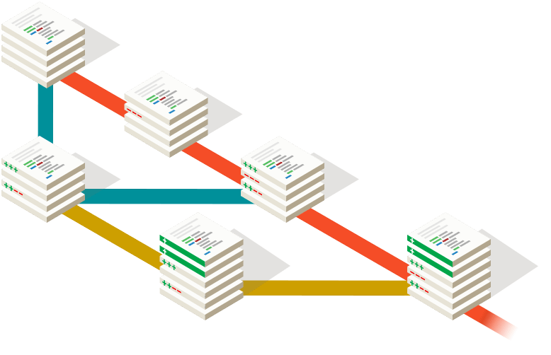

Git is a free and open source distributed version control system designed to handle everything from small to very large projects with speed and efficiency.
Git is lightning fast and has a huge ecosystem of GUIs, hosting services, and command-line tools.
